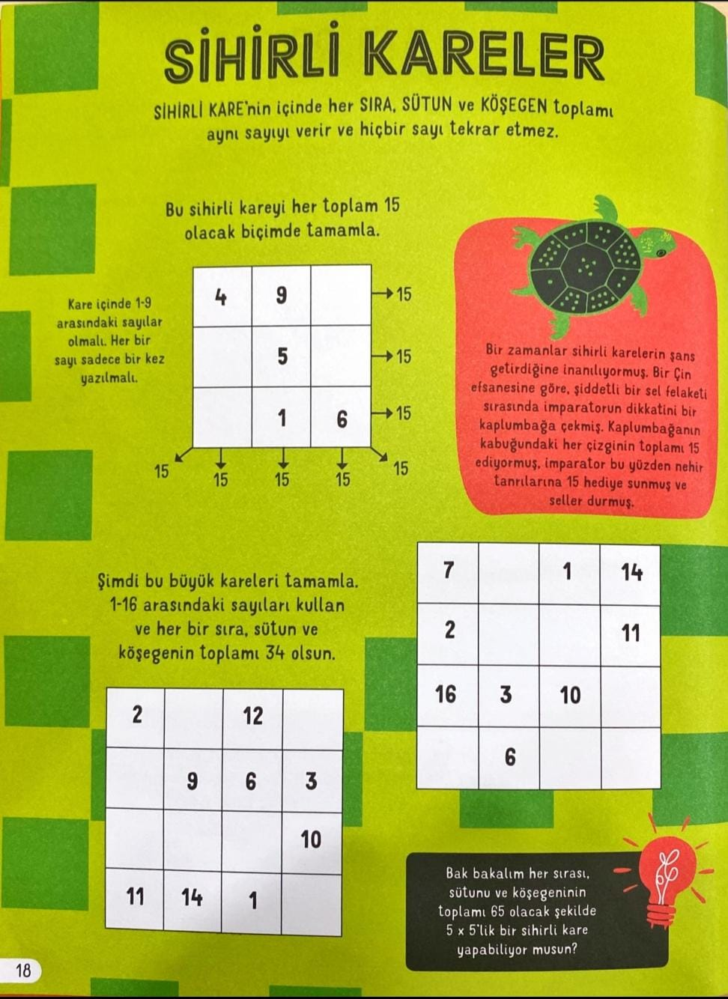

Merhaba! Bu uygulama, uçak içi eğlence sistemleri için geliştirilmiş bir artırılmış gerçeklik (AR) uygulamasıdır. Uygulama sayesinde çocuklar, sıradan bir yolculuğu eğlenceli hale getirebilir ve interaktif öğelerle zaman geçirebilir. Kamera yardımıyla "Sihirli Kareler" görselini taradığınızda 3D nesnelerle eğlencenin tadını çıkarabilirsiniz.
